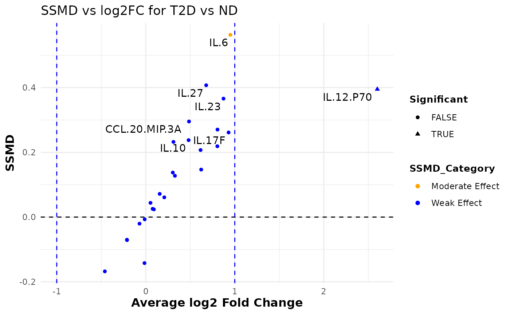

This function reshapes the input data and computes summary statistics (mean and variance) for each variable grouped by a specified factor column. It then calculates the SSMD (Strictly Standardized Mean Difference) and log2 fold change between two groups (group1 and group2) and categorizes the effect strength as "Strong Effect", "Moderate Effect", or "Weak Effect". A dual flash plot is generated using ggplot2 where the x-axis represents the average log2 fold change and the y-axis represents the SSMD. Additionally, the function prints the computed statistics to the console. A ggplot object is returned for further modification.
Usage
cyt_dualflashplot(
data,
group_var,
group1,
group2,
ssmd_thresh = 1,
log2fc_thresh = 1,
top_labels = 15,
category_labels = c(Strong = "Strong Effect", Moderate = "Moderate Effect", Weak =
"Weak Effect"),
colors = c(`Strong Effect` = "red", `Moderate Effect` = "orange", `Weak Effect` =
"blue"),
shapes = c(`FALSE` = 16, `TRUE` = 17),
verbose = FALSE
)Arguments
- data
A data frame containing at least one numeric column and a grouping column.
- group_var
Character. Name of the grouping column.
- group1
Character strings identifying the two levels of
group_varto compare.- group2
Character strings identifying the two levels of
group_varto compare.- ssmd_thresh
Numeric. Absolute SSMD threshold for highlighting observations as significant. Default is 1.
- log2fc_thresh
Numeric. Absolute log2 fold change threshold for significance. Default is 1.
- top_labels
Integer. Number of variables with the largest absolute SSMD to label on the plot. Default is 15.
- category_labels
Optional named character vector of length three providing alternative labels for the SSMD effect categories. Names must include "Strong", "Moderate" and "Weak". Defaults are
c(Strong = "Strong Effect", Moderate = "Moderate Effect", Weak = "Weak Effect").- colors
Optional named character vector mapping the effect categories to colors. Names must match those in
category_labels. Defaults are red for strong, orange for moderate and blue for weak.- shapes
Optional named numeric vector of length two giving the plotting characters for non‑significant and significant points. Defaults are
c(FALSE= 16,TRUE= 17)(solid and triangular symbols).- verbose
Logical. If
TRUE, prints the computed summary statistics. Default isFALSE.
Value
A ggplot object representing the dual‑flashlight plot.
When verbose is TRUE, the summary statistics data frame is
printed to the console.
Examples
# Loading data
data_df <- ExampleData1[, -c(2:3)]
cyt_dualflashplot(data_df, group_var = "Group", group1 = "T2D", group2 = "ND",
ssmd_thresh = 0.2, log2fc_thresh = 1,
top_labels = 10)
